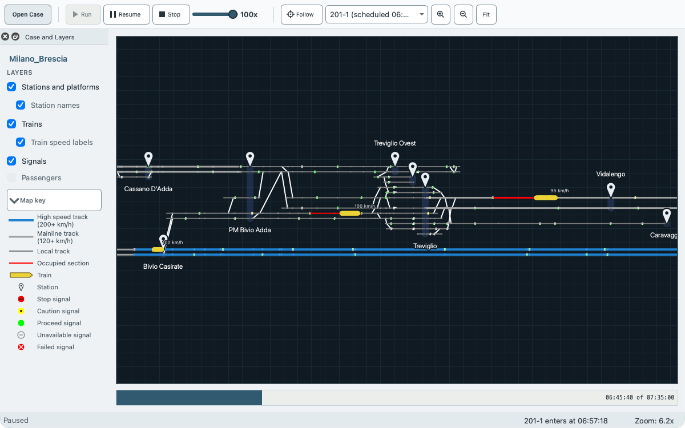

EGTRAIN is a desktop application for microscopic railway simulation.

Download EGTRAIN 1.0.5
-
macOS
Disk image for Apple silicon Macs with macOS 26 or later
EGTRAIN-1.0.5-macOS-arm64.dmg -
Windows installer
Installer for 64-bit Windows
EGTRAIN-Setup-1.0.5-x64.exe -
Windows portable archive
Zip archive for 64-bit Windows that you unzip and run without installing
EGTRAIN-Portable-1.0.5-x64.zip -
Linux
AppImage for 64-bit Linux with glibc 2.38 or later, as on Ubuntu 24.04
QEGTRAIN-linux-x86_64.AppImage
Installing EGTRAIN has the steps for each system, including what to do when macOS or Windows warns before the first start.
The release page of EGTRAIN 1.0.5 has its release notes and the size of each file.
The source code page lists every release with an archive of its source code.
Bundled cases
The packages contain six cases. Each is also a separate .egscene file that EGTRAIN opens. Bundled cases describes them.
Documentation
- User guides: installing EGTRAIN, running cases and editing them
- Developer pages: building from source, testing and the structure of the code
- C++ reference: the classes and functions of the source code
Each version has its user guides, developer pages and C++ reference:
For help with a problem, see Support.